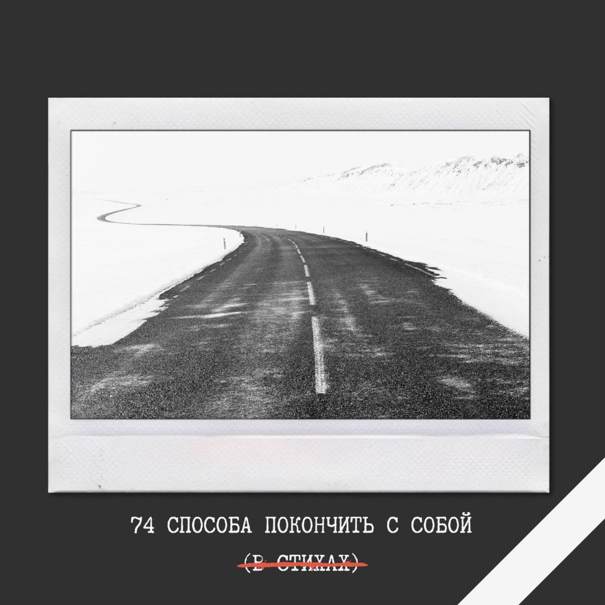

|  |
Инструментал
Ежели бы мне бы наркотики бы дали бы
Я бы не уехал бы даже продал педали бы
Мы бы все остались бы, даже билеты сдали бы
Ежели бы мне бы наркотики продали бы
Ага
Еже ли бы мне бы наркотики бы дали бы
Я бы не просил бы и мне бы не давали бы
Мы бы все бы выкинули бы или раздали бы
Ежели бы мне бы наркотики продали бы
Ага
В сторону Девяткино поеду на метро.
Там такие люди, там такая кутерьма.
Только на поверхность я не стану выходить.
Растворюсь в толпе и сгину где-то под землей.
В сторону Девяткино поеду на метро.
Там уже наверно все порядком надрались
и недоуменно задают себе вопрос:
что же чёрт меня там носит где-то под землей.
В сторону Девяткино поеду на метро.
Настреляю мелочи, куплю себе билет.
Нечего стесняться и бояться нет причин.
Я и так всю жизнь скитаюсь где-то под землёй.
Её ебало полрайона
Её ебало полрайона
Со слов какого-то гандона
Её ебало полрайона
Я тоже так-то не подарок
О да, я точно не подарок
С мешком травы и перегаром
Короче, точно не подарок
Мы с нею даже не знакомы
Ни разу не встречались, вроде
Но вот свободно и легко мы
Лежим в одном холодном морге
Она без явных повреждений
А я с банальным огнестрелом
И нет сомнения ни тени
Что с этим ничего не сделать
Ах если б были мы знакомы
Ну хоть бы жались по подъездам
А на расспросы всех знакомых
Культурно слали на хуй лесом.
Тогда возможно бы иначе
Сложились миллионы судеб
Но нас постигла неудача
Нас больше никогда не будет
Косьба шумела удалая,
и я впервые сам косил,
конечно, еле поспевая,
но помогая в меру сил.
А как мне было быть иначе,
когда ответить «помогу»
старик-косарь меня подначил?
Помог бы, дескать, старику.
Я разухабисто работал
и даже раз косу погнул.
Старик ругал меня чего-то,
но все глушил покоса гул.
Потом мы славно отдыхали
под сенью липы вековой
и так сидели бы веками,
да всё ж пора было домой.
«Вот так вот надобно трудиться! –
Сказал старик. – Приятны ведь
в мозолях руки, соль на лицах.
Не то, что в офисе сидеть!»
«Зачем же разум в человеке? –
Спросил я, было, стрика. –
Уже ли в двадцать первом веке
косить, как в средние века?»
Старик за думался, похоже,
и долго-долго в даль смотрел,
и вдруг забился в мелкой дрожи:
«Ты чё, бл*ть, с*ка, ох*ел?
Таких г**донов по **алу
х**рить надо сапогом,
чтоб не п**дели, что попало,
своим у**ищным **лом!
А то смотри-ка, расп**делся,
как п**ор гнойный, с*ка, бл*ть!
В таких у**ков – только целься –
из г**номёта расстрелять!
Чё, сука, на! бл*, сука, на! бл*!
За**ал, бл*, сука? бл*, за**ал?»
Коса рубила, словно сабля,
и вечер в мареве сгорал.
У меня в кармане
полная пачка отборной шмали.
У меня в натуре
полная пачка убойной дури.
Вмажем по старинке
и ещё добавим сверху.
Нашей вечеринке
явно не хватает смеху.
А на этой пачке
крупным шрифтом – тлен и пепел.
Что же это значит?
Ничего, как я заметил.
Всё равно в финале
ляжем все в сырую землю.
Зря что ль запрягали?
Полетели по вселенной.
Проститутка мертва.
Кокаин не помог.
Ей пришлось отходить
в луже собственной рвоты.
Но пускай мы в дрова,
хватит сил на рывок.
Мы продолжим кутить,
раз уж вечер субботы.
Мы поедем в кабак
на роскошном ландо.
А подъехав едва,
запоём и запляшем.
Да, конечно, всё так.
Нам отнюдь не смешно.
Проститутка мертва.
Но проблема не наша.
До Содома далеко.
До Содома не успеть.
На трамвае не доехать, на машине супермена ни за что не долететь.
Может лучше не юлить.
Может нужно потерпеть.
До Содома далеко, и все оракулы твердят – до Содома не успеть.
До Содома далеко.
До Содома не успеть.
Может нужно было просто в деревянном макинтоше на Венеру улететь.
Может лучше помолчать.
Или песенку пропеть.
До Содома далеко, и в новостях опять сказали – до Содома не успеть.
До Содома далеко.
До Содома не успеть.
Даже если суперджет заправив чистым героином с небоскреба полететь.
Может лучше просто быть.
Или взять да помереть.
До Содома далеко, и нам разведка доложила – до Содома не успеть.
До Содома далеко.
До Содома не успеть.
До Содома далеко и нам, наверно, не успеть.
До Содома далеко.
До Содома не успеть.
До Содома далеко и нам, наверно, не успеть.
Сквозь ебучую тысячу лет,
сквозь ебучую тысячу лет,
сквозь ебучую тысячу лет
пролетит мой куплет, ну а может и нет.
Но на всякий пожарный спою,
что у нас тут был полный атас,
чтоб потомки какую хуйню
не подумали думать про нас.
Ну а может и не пролетит.
На потомков мне, так-то, плевать,
мне ведь с ними детей не крестить,
мне ведь с ними блядей не ебать.
Но на всякий пожарный спою,
что мы тоже могли кой-чего,
чтоб потомки какую хуйню
не швыряли бы в нас ни в кого.
Сквозь ебучую тысячу лет,
сквозь ебучую тысячу лет,
сквозь ебучую тысячу лет
пролетит мой куплет, ну а может и нет.
Если я не сойду с ума,
если не покончу с собой,
и минуют меня тюрьма
или просто недуг какой,
я приеду в Петрозаводск
или просто приду пешком,
если станет, что стук колёс
не смогу оплатить потом,
и пройдусь по уже чужим,
обходившимся без меня,
точно я тут вообще не жил,
если вдуматься, и ни дня,
непривычно пустым дворам,
чтоб до самых познать глубин,
что и самый великий храм
не избегнет судьбы руин.